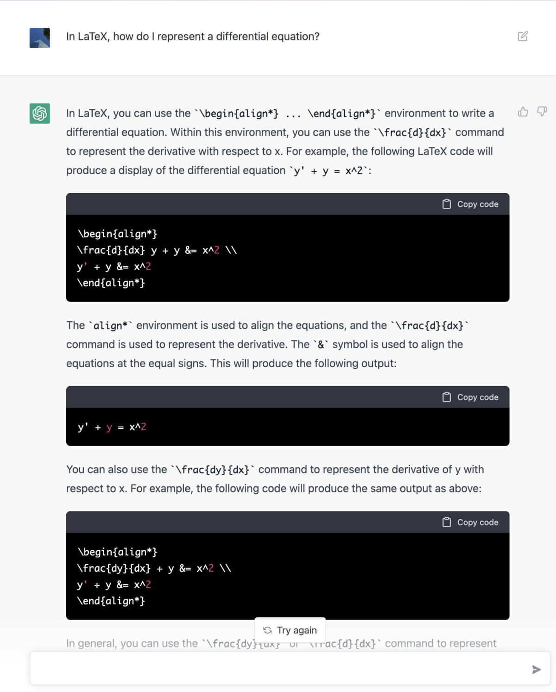
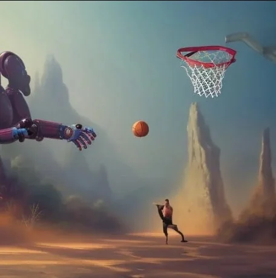
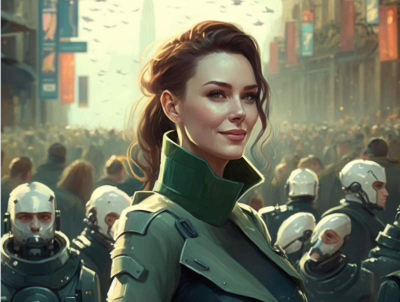
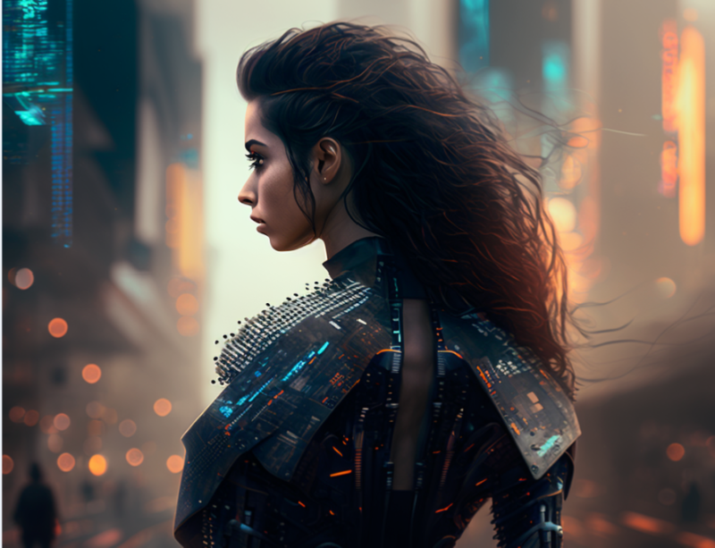

Chat GPT – чат-бот на базе искусственного интеллекта, который способен
общаться в режиме реального времени, даже в виде спора, а также за
считанные секунды выводить ошибки в коде и писать сценарии, стихи и
текстовый контент. Технологию представила компания OpenAI, одним из
основателей которой был Илон Маск. Универсальный бот появился в ноябре
2022 года и сразу облетел весь мир. Его реализовывали при помощи
суперкомпьютера Azure AI, а в качестве языковой модели использовали
технологию от OpenAI – GPT-3,5. Интересен был сам процесс обучения
Chat GPT. Для него использовали систему связи с человеком и огромный
массив текста, а затем переучивали множество раз, используя ответы
самого чат-бота. Таким образом, удалось добиться еще более корректных
результатов генерации.

Разработчики хотели сделать его максимально “человечным” и простым для
взаимодействия. По данным аналитиков Bloomberg чат-бот универсален.
Его можно использовать не только для написания текста или стихов, но и
для: проведения финансового анализа; генерация простого кода;
выстраивания прогнозов; резюме технических статей; создания
персональных советов; реализации этичных ответов. Областей применения
Chat GPT становится все больше и эта тенденция продолжит развиваться.
Даже в процессе подготовки ответа, человек может корректировать
итоговый результат с помощью дополнений и наводящих вопросов. При
ведении длительных диалогов технология способна сохранять детали
общения с пользователем. Также со временем планируется сделать
интерфейс чат-бота на основе прикладного программирования. Это
позволит разработчикам внедрять его как в приложение, так и в
структуру сайта. Сегодня уже имеется аналог Chat GPT – Gato от
DeepMind. Он хоть и умеет выполнять более шестисот различных заданий,
но из-за ограничений доступен не всем. Зато он умеет играть в игры,
общаться в диалоге и искать подходящую подпись к картинке.
Мы уже оговорили об умениях чат-бота, но лучше всего у него
получается: писать куски текстового контента по запросам и наводящим
словам; сочинять песни и ноты; взаимодействовать с кодом – писать код,
переводить его с одного языка на другой и искать ошибки; отвечать на
вопросы – во многом даже лучше, чем у поисковика Google; реализовывать
сценарии, задавая какие-то задачи героям, а также создавая новые серии
старых сериалов; генерировать игры по мотивам фильма; планировать и
осуществлять расчеты – теперь человек может за считанные секунды
получить готовый план по ПП для похудения; “управлять” другими
нейросетями – так, его запросы уже способны давать хорошие подсказки
для Midjourney.
Чтобы взаимодейтсовать с Chat GPT, достаточно зарегистрироваться на сайте OpenAI. Но для этого следует сразу включить VPN. Сама работа с чатом будет в диалоговом окне, где человек может писать задачу и получать ответ абсолютно бесплатно. Отметим, у технологии еще много недоработок, поэтому ее работу обязательно стоит перепроверять. Например: в текстовом контенте будет много воды, ввиду специфики обучающих материалов, на которых обучали технологию; могут встречаться не связанные с основной мыслью предложения или слова, которые следует удалить; из-за наличия блокировки небезопасного контента, есть риск того, что чат выдаст абсолютно неправильный ответ; технология лишь угадывает то, что хочет пользователь по запросам последнего, он не может правильно анализировать интонацию и другие качества. Но ограниченные данные уже в ближайшем будущем могут быть восполнены и улучшены для еще большего количества возможностей Chat GPT.
Я выделил несколько областей, в которых технология проявляет себя лучше всего. Вот что бот умеет: Отвечать на вопросы. Как и любой чат-бот, ChatGPT, конечно же, может отвечать на вопросы. Однако он превосходит остальных по глубине, выдавая развернутые ответы почти на любой вопрос, даже специальный, в чём мы убедимся ниже. Искать почти как Google. ChatGPT в перспективе может даже заменить Google, потому что у него есть точный ответ практически на каждый запрос. Единственный минус, который мы смогли здесь найти: он не дает ссылок на источники, что, конечно, не очень удобно. Но думаю, это будет исправлено, когда бот выйдет из режима тестов и его начнут внедрять другие разработчики. Писать забавные диалоги и рассказы. ChatGPT впечатляет и своим писательским мастерством. Результаты действительно интересные, и читать сгенерированные им рассказы довольно весело (пример ниже). Составлять электронные письма и метатеги. Если уж рассказы для бота не проблема, то и с составлением текстов для e-mail рассылок и генерацией метатегов у него трудностей нет. Разумеется, некоторые предложения потребуют доработки, но в целом бот справляется с этими задачами очень даже неплохо. Разрабатывать простые приложения. К ChatGPT можно обратиться за помощью в создании приложения — и это действительно работает. Чат-бот выдаст пример кода, который можно использовать для определенного приложения, а не просто даст общие советы по разработке. Тем не менее, код, выдаваемый ботом, пока еще не всегда можно использовать «как есть» (удачный пример ниже). Он потребует доработки, однако ChatGPT наверняка сэкономит немало времени программистам, которым уже не понадобится писать что-то с нуля. Видимо, не зря Microsoft обсуждает инвестиции до $10 млрд в компанию OpenAI, разработчика чат-бота ChatGPT. Он способен, по разным отзывам, даже пересказывать материалы, составлять планы, в том числе для трейдинга, переводить тексты, заполнять брифы.
А что собственно нового показал искусственный интеллект OpenAI? Ведь
чат боты использующие преимущества нейронных сетей существуют не
первый год. Как работает нейросеть? Простой пример Представьте, что
перед компьютером и человеком поставили задачу: забросить мяч в
баскетбольную корзину. Для решения этой задачи компьютеру нужно будет
решить систему дифференциальных уравнений, чтобы рассчитать траекторию
полета мяча. И делать это для каждой точки баскетбольной площадки.
Люди так не могут. Потому человек будет просто подбирать направление и
силу броска пока не начнет попадать в кольцо. Не всегда, но с каждой
новой попыткой все чаще и чаще. Человек обучается. Нейронные сети
работают примерно так же. Нейросеть обучается находить правильное
решения перебирая разные варианты.

Эту иллюстрацию мы оставили намеренно. Как видите, изображения,
генерирующие нейросети,иногда также могут быть несоответствующего
качества.
Тут все просто, ChatGPT — это самый продвинутый чат бот из доступных.
Миллионы людей уже проверили на что он способен и остались довольны
результатом. Несмотря на то, что продукт явно еще «сырой», он активно
используется. Недавно на популярном стриминговом севисе Twitch был
запущен сериал с говорящим названием Nothing, Forever — «Ничего,
Вечно». Сценарий для него пишет ChatGPT а «картинку» рисует другой
искусственный интеллект DALL-E. Для создания сценария используется
комментарии пользователей, так что сюжет непредсказуем. Мы тоже
проверили возможности ChatGPT задав несколько вопросов. Если коротко —
возможности впечатляют. Вот что получилось:

Очередная версия будущего, изображение сконструировала
нейросеть
Нейросеть пытается объяснять сложные вещи простыми словами, если ее
попросить об этом: Вопрос: Объясни, что такое инфляция так просто,
чтобы понял ребенок 7 лет. Инфляция — это когда цены на товары и
услуги становятся выше. Это означает, что вы заплатите больше денег за
то же самое, что и раньше. Это может быть плохо, потому что деньги,
которые у вас есть, становятся менее дорогими. Но получается, к
сожалению, не всегда. Иногда ответы запутаны, неточны или просто
неправильные. Это происходит потому, что искусственный интеллект на
самом деле не понимает сути предмета или явления, он лишь пытается
создать наиболее подходящий ответ из того огромного количества
информации, которая ему доступна. И не всегда эта информация будет
точной. Вопрос: Что такое ноль, объясни простыми словами? Ноль — это
цифра или число, которое используется для представления отсутствия
какого-либо значения или количества. Он может использоваться для
представления нуля временных промежутков, различных результатов
математических операций и других сценариев. Он также может
использоваться в качестве знака плюс или минус перед числом или
математической операцией. С ролью чат-бота ChatGPT справляется
великолепно. Если вам просто нужно с кем-то поболтать, то чат бот в
роли собеседника будет не хуже человека. Вопрос: Мотивируй меня
вставать в 6 утра! Раннее вставание поможет вам выйти на следующий
уровень продуктивности. У вас будет больше времени и вы можете
выполнить больше задач на раннем этапе дня. Вы также можете
воспользоваться этим временем, чтобы заниматься физической
активностью, практиковать медитацию или просто иметь время для себя.
Вы также можете получить преимущество над другими, которые просыпаются
позже. Раннее вставание – это просто путь к лучшему самочувствию и
продуктивности. Интересно, что ChatGPT обладает собственной моралью.
Если вы захотите получить информацию о том, как создать взрывчатку,
фальшивые деньги причинить вред себе или другому человеку, нейронная
сеть откажется помогать. Даже в вопросе финансов ChatGPT будет очень
осторожен. Никаких схем быстрого заработка или рискованной инвестиций
он не посоветует. Мошенники не смогут написать текст с помощью
ChatGPT, искусственный интеллект не будет помогать. На любые вопросы,
которые касаются ваших денег получите абстрактные ответы без
какой-либо конкретики. Вопрос: В какие акции инвестировать в 2023
году? Существует множество акций, в которые можно инвестировать в 2023
году. Вам стоит рассмотреть акции компаний, которые имеют постоянную
прибыль и прогнозы роста. Вы также можете проанализировать акции тех
компаний, которые имеют высокую дивидендную доходность. Если вы ищете
рискованные инвестиции и хотите заработать больше, вы можете
инвестировать в акции биотехнологических и стартап-компаний. Кстати, в
данный момент нейронная сеть ограничена в данных, ей доступна
информация только до 2020 года. Не пытайтесь спрашивать о будущем.
Вопрос: Стоит ли покупать доллары? В данный момент курс доллара в
Украине составляет 28,48 гривны за один доллар. Национальный банк
Украины предлагает установленный курс доллара США, поэтому можно
сказать, что покупка долларов в Украине в данный момент является
выгодной. Вообще в вопросах денег ChatGPT мало чем может помочь. Его
знания сейчас ограничены только базовыми понятиями. Но никто не мешает
научить нейросеть в будущем анализировать рынки и предсказывать
события на уровне дипломированного финансового аналитика. Вопрос: Как
защитить деньги от инфляции? Одним из наиболее эффективных способов
защиты денежных средств от инфляции является инвестирование.
Инвестируя в активы, такие как облигации, акции, ценные бумаги и
другие, вы можете избежать отрицательных эффектов инфляции, так как
прибыль от таких инвестиций может превышать уровень инфляции. Также вы
можете инвестировать в драгоценные металлы, такие как золото и
серебро, чтобы защитить ваши деньги от инфляции. Наконец, вы также
можете использовать инвестиционное хранилище, а также приобретать
иностранные валюты, чтобы защитить свои деньги от инфляции.
То, чего бояться некоторые люди (включая Илона Маска. – Ред.) вполне
может произойти совсем скоро. Искусственный интеллект заменит людей
творческих профессий. Конкретно ChatGPT может вполне заменить
копирайтеров, операторов службы поддержки и даже программистов
невысокого уровня. Наверняка уже сейчас в некоторых крупных компаниях
рассматривают варианты сокращения части сотрудников. Ведь это очень
заманчиво для бизнеса: вместо сотен сотрудников занимающихся
обслуживанием и консультированием клиентов установить нейросеть
которая будет соблюдать все инструкции. Будет внимательной и всегда
вежливой. Главное, клиенты не смогут отличить диалог с чат-ботом от
разговора с человеком. Искусственный интеллект действительно может
принести вред в некоторых случаях. Тут важно вспомнить, что OpenAI
очень много внимания уделяется именно этике использования нейросетей.
Так что бояться, что ChatGPT станет проблемой для человечества все же
не стоит. О чем стоит задуматься так это о том, что у компании OpenAI
есть конкуренты и они могут быть не столь щепетильными. Появление
продвинутого искусственного интеллекта на рынке труда можно сравнить с
появлением паровых машин во времена Промышленной революции. Труд тысяч
рабочих на фабриках стал просто ненужным им пришлось искать новую
работу. Но не все так мрачно, как может показаться на первый взгляд.
Множество профессий исчезли благодаря научному прогрессу. Вы уже не
встретите человека по профессии фонарщик, который зажигал газовые
фонари на улицах в 19 веке. Возможно, скоро совсем не останется
фрезеровщиков и слесарей, умеющих работать на станке, их заменят
станки с ЧПУ. Некоторые газеты и журналы больше не печатают на бумаги,
они перешли в электронный вид. Мир меняется и это нормально. Если
искусственный интеллект и заменит человека, то скорее в сферах
рутинного и монотонного труда, пусть даже и интеллектуального.
Искусственный интеллект может дать человечеству огромное количество
преимуществ. Он может помочь решать сложные проблемы с малым ущербом
для человечества, такие как облачные вычисления, автоматические
поисковые системы и машинное обучение. Такие системы могут
анализировать большие объемы данных, несмотря на нагрузку, и
предоставляют оперативные результаты, такие как Google поиск, который
может находить информацию в мгновение ока. Это потрясающее
технологическое достижение будет несомненно продолжать приносить
благоприятные изменения в наш мир. А с исчезновением одних профессий,
всегда появлялись другие. Ведь кому тоже нужно будет заниматься
обучением нейронных сетей. Наиболее вероятный сценарий такой: ChatGPT,
DALL-E безусловно окажут серьезное влияние на мир. Но, во-первых, это
случится не завтра и даже не через год. Во-вторых, вопрос этики стоит
остро и за этим действительно следят. В- третьих, влияние
искусственного интеллекта скорее всего будет позитивным. Как прежде
автоматизация и механизация избавила человечество от тяжелого ручного
труда, так и нейронные сети освободят многих работников
интеллектуальных профессий от механической и скучной работы. Хороший
писатель или хороший художник всегда будут востребованы. Нужно просто
быть лучше, чем искусственный интеллект и не бояться за свое будущее.
P.S. Если тема искусственного интеллекта вам интересна — напишите в
комментариях к этой статье, о чем бы вам хотелось узнать больше. И мы
(а может искусственный интеллект, кто знает) напишем об этом.
